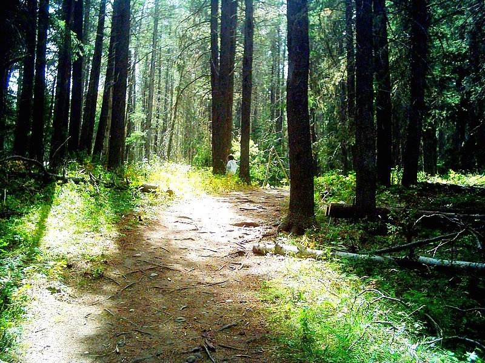
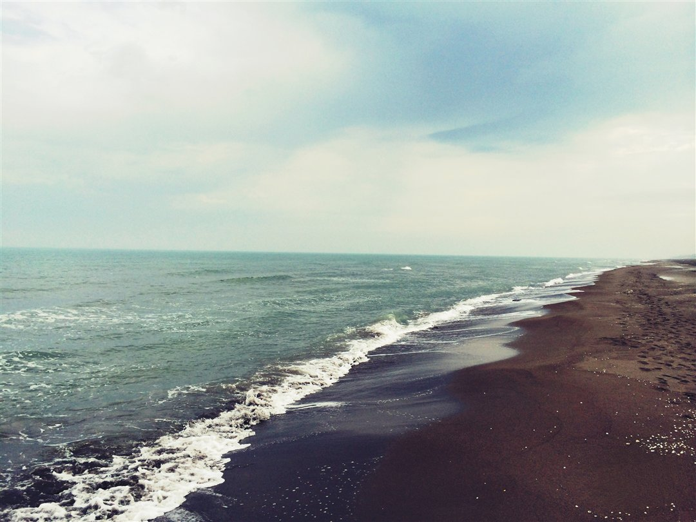
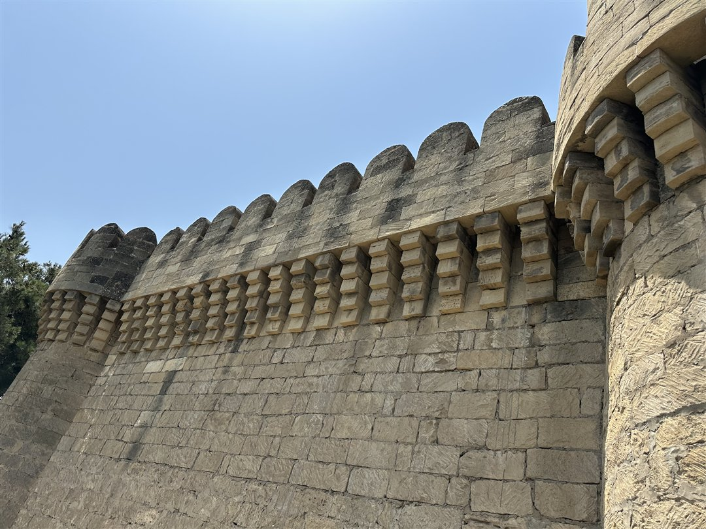
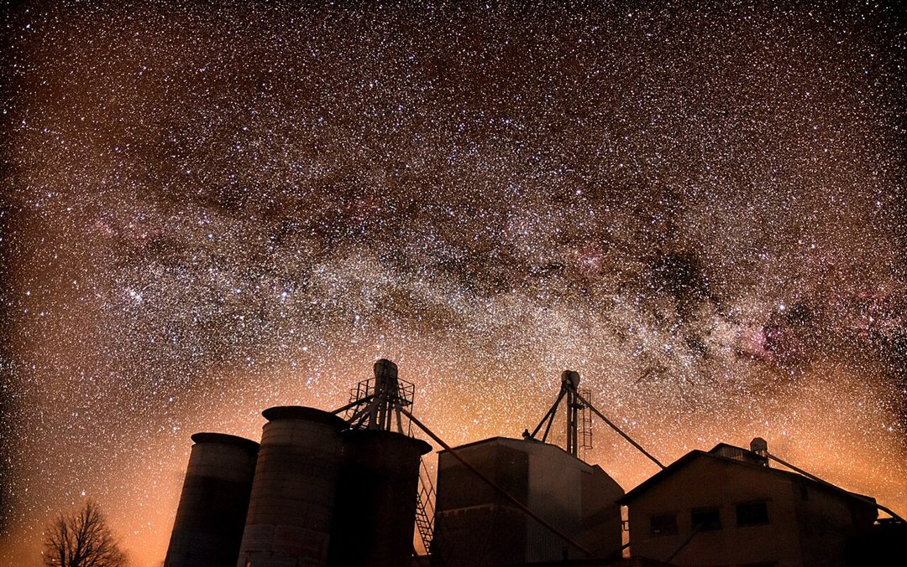
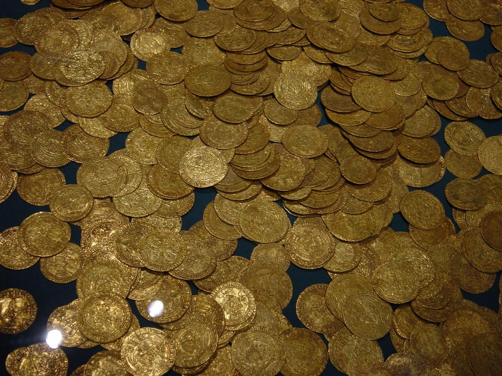

Sehrli Meşə
Forest Image — Kim Siever
Fonlarda real fotoşəkillər istifadə olunur. Şəkillər ölçüləndirilib, ekrana uyğun kəsilir və oxunaqlılıq üçün üzərinə tünd qat çəkilir.

Forest Image — Kim Siever

Caspian Sea Khezershahr beach — Sasan Geranmehr

The rear tower and walls of Mardakan Castle — En Merker

Milky way composition — Taavi Niittee

Hoard of ancient gold coins — Swiss Banker